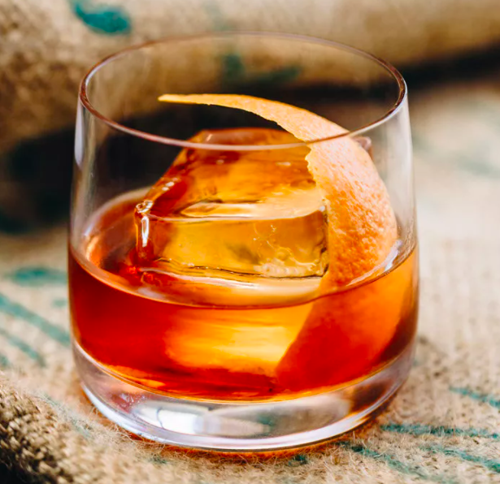

Bourbon Old Fashioned
Ingredients
Bourbon
- 2 ounces Cold Buffalo Trace Kentucky Straight Bourbon Whiskey
The Rest
- 1/2 tsp sugar
- 3 dashes Angostura bitters
- 1 tsp water
- Garnish: orange peel
Steps
Get a cold whiskey glass and a sphere ice mold
The Mix
- Add the sugar and bitters to a rocks glass, then add water, and stir until sugar is nearly dissolved.
- Fill the glass with the large ice sphere, add the bourbon, and gently stir to combine.
- Express the oil of an orange peel over the glass, then drop in.
- Enjoy the smooth taste of excellence.
View the original recipe online
Contact Me
Send me an email!
University of Montana
32 Campus Drive
Missoula, MT 59812